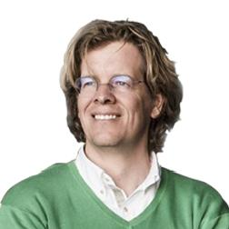
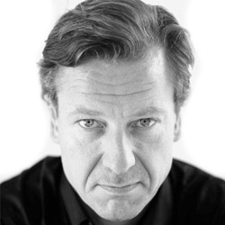
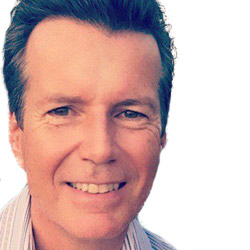
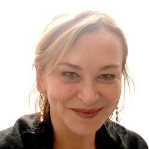
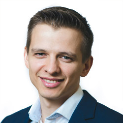

kristof de spiegeleer
Kristof is a humanist & motivated entrepreneur, passionate to help make the world a better place. He likes to develop and invent infrastructure IT systems (storage, automation, cloud computing). Kristof has founded more than 10 companies from which 6 have been acquired by large IT players. He was lucky to be part of the first teams building the Internet and has helped to grow datacenters & ISPs mainly in Europe. Currently Kristof is CEO of ThreeFold Tech. Kristof strongly believes there is need for a neutral internet owned by millions.
x

chris hutton
A serial entrepreneur and technology fanatic for 25 years now. Always researching tech trends and looking for new technologies to introduce to Africa. The continent of Africa is unique, to say the least, and the issues prohibiting growth and development are unique. Africa has proven its ability to leap frog a generation in technology with the rapid adoption of mobile telecommunications and its time to bring the new internet to this continent and watch how access to information creates equality and opportunity for Africa.
x

adnan fatayerji
Adnan is an international entrepreneur and part of a diverse team of innovators trying to redefine the foundation of internet. Adnan has been based in the United Arab Emirates for the past 15 years, he has built grass root businesses and invested startups in various sectors. At Threefold he is responsible for driving operations and is honored to be part of a team that has the potential to make the world a better place by connecting billions of people to a new neutral and green internet accessible by all.
x

weynand kuijpers
A Master degree in space technology Weynand experienced that fundamental research and advances in space technology were not quick enough, therefore, he shifted to slingshotting internet technologies in customer centric orbits. He was involved in the early 90's in the first large scale data centers that were being built in Europe to deliver Managed Services over the Internet. Since then he worked in executive roles in large American and Japanese telecom operators. As VP of Operations and later VP Marketing and Sales Strategy sold and delivered one of the largest sport ePortals in the world, uefa.com. Worked as a consultant for uefa to restructure their IT department and helped them to deliver a safe and successfull EURO tournament in Ukraine and Poland in 2012. As a person he is a social thinker that inspires people and organizations to do things different, aspire to their full potential, develop unique strengths, grow personal influence, liberate collective intelligence and achieve personal and business goals. The only constant is change.
x

andreas hartl
Establishing new brands and building solid successful teams have been Andreas passion for more than 15 years. He held several senior roles at major ICT firms in both global and regional management responsibilities. Andreas was the Head of Global Channel Sales at GIG Technology, a technology company at the forefront of distributed IT infrastructure. Prior to this Andreas spent eight years at Riverbed in numerous senior roles including Regional Head for Germany, Austria and Switzerland and also EMEA Head of Channel Sales. Andreas has a strong track record of developing and executing business strategies and delivering revenues in new markets. He has a degree in Business Economics from the University of Regensburg in Regensburg, Germany.
x

peter van der henst
Makes sure people get paid every month :-)
x
pierre van hoorebeke
Experienced business lawyer, assisting founders, investors and private companies on corporate, commercial and IP matters. Advising on venture capital and private equity transactions, capital restructurings, contribution and shareholders’ agreements, issuance of stock options, warrants, etc. Counselling in M&A and corporate transactions (including corporate restructuring, due diligence, share and asset deals, national and cross-border mergers, etc.); Drafting and negotiating complex commercial transactions (including NDA’s, distributor and reseller agreements, sale and lease agreements, license agreements, OEM agreements, etc.); Trusted corporate advisor (incorporation, director’s liability, corporate housekeeping, insolvency proceedings, liquidations, etc.).
x

owen kemp
In all walks of life, Owen looks for an equitable exchange of value and believes in doing everything in a socially responsible way. He loves working with diverse teams as they best represent our amazing planet. Emerging markets have been his passion and his profession. he has travelled to almost 150 countries helping local teams to flourish. Once described as an optimist and anarchist. He has humour and enjoys doing things in an unconventional way.
x

didem gordon
Didem has over 25 years of experience in building and developing businesses in emerging markets and strategic management. Her career as a top executive in investment banking and wealth management and an opinion leader in the Turkish finance sector resulted in a valuable global reach over the years. Didem's thirst for knowledge and passion for creation paved her way into venture consulting over the recent years where she advises in make ideas into enterprises with a focus on operational excellence, talent management, and stakeholder relations​. Having a keen interest in technology and innovation, as a water-bearer, she has been investing her time in continuously learning and working with high-tech startups in Europe and the US. Making a positive impact for a better world defines her business scope as she carefully choses the projects she works on that aim towards a better world and is in the process of establishing her startup, Phaida Ventures upon this key principle. Didem is very honored to be part of the ThreeFold Tech team in thriving to provide a green and neutral internet shared by all.
x

Simin Gerards
Simin's career spans over 23 years in the in the finance sector, working closely with institutional investors in Turkey and globally, specializing on the capital markets business, trading and exchanges. She has taken place in several primary and secondary offerings and placements, organized roadshows and investor conferences and events, and have built, led and supervised sales and research teams at executive positions during her career. Most recently, she has been the CEO of Erste Securities in Ä°stanbul. She is inspired by form and harmony, and finds great outlet in sculpting and designing metal artifacts.
x
Dieter Legat
x

roel van sabben
An ex-advertising art director that always had a passion for data and measuring the effects of advertising campaigns. Now Digital Marketeer at Threefold Tech. Besides work you can find me out with my family or on the mats being a teacher and forever a student of the beautiful martial art Brazilian Jiu Jitsu.
x

sabrina sadik
Sabrina is a jack of all trades when it comes to ThreeFold. She handles most of the customer communication, is in charge of the logistic aspects and helps out whevever needed. Sabrina is an outgoing person who loves to laugh and be with friends and family, but she's secretly also a bit of a nerd who loves the calmth of being alone and reading a book while her daughter is asleep. Her hobbies include reading, watching Netflix and GoT, and being a kick-ass mom.
x
stela suils cuesta
Stela is a firm believer that it's possible to do business from the heart. She is a passionate team builder and thrives in challenging situations. Stela is a very active member of the community and organises TEDx events as well as Lean In Circles and mentorships programs. Stela is passionate about Positive Psychology, D&I, Women Empowerment and Social Entrepreneurship, specially in Blockchain and Crypto.
x

nickolay babenko
Nickolay is an engineer, crypto-entrepreneur and investor and bhakti-yogi. The combination of a technical mindset and deep understanding of the psychology of relationships helps him to to achieve ambitious and practical goals and secure long-standing relationships. Having 11 years of experience in the IT industry and 4 years specifically in blockchain industry, Nickolay is eager for new opportunities to make people happier in general and with the help of technology in particular. Previously to joining ThreeFold Tech he co-founded one of the first bitcoin payment processors and multicurrency wallets.
x
Peter Richter
Born in Belgium, from German/Dutch descent, Peter is a German citizen with a 25+ year background in Logistics and Supply Chain, of which the last 15 years managing the Supply Chain for Ferrero Russia. In 09/2010 left Ferrero – Appointed Business Development Director at Swiss based DEGA AG - sphere: Industrial Park Development and Decentralised Energy In 04/2014 – Divested 67% of Dega’s 30MW CHP Plant to E.ON Connecting Energies In 11/2014 – Appointed GM at E.ON Connecting Energies Russia – sphere:B2B Decentralised Energy In 02/2016 – Became self employed project integration / management consultant –sphere: primarily Industrial Development and Construction and Decentralised Energy In 07/2019 – Joined the Business Development Team of Threefold Tech – part-time – sphere IT infrastructure In 08/2019 – Appointed GM at Kadeon Development – part-time – sphere: Industrial Development and Construction Peter is the Chairman of the Expert Council at the Chamber of Commerce and Industry of Odintsovo (RF), Member of the Expert Council at the Strategy Foundation, as well as an Ambassador at the Threefold Foundation
x
daniela nikolova
Daniela Nikolova is an Integrative Nutrition Health Coach, Emotional and Spiritual Intelligence Guide, Intuitive Personal and Business Advisor who combines her knowledge and natural gifts in different therapies and healing modalities in order to assist others achieve balance, awareness and alignment on all levels and areas of their lives. Her journey began back in 2008 when she was faced with numerous health challenges. She sees that phase of her life as one of her biggest blessings where she learned the true value of life, love, compassion and gratitude. It was during her time of healing through awareness, energy and alternative medicine when she discovered her true life purpose and desire to helping others and guiding them towards living life on purpose and truth. Daniela is passionate about contribution and is currently involved in few voluntary projects worldwide. She believes that we are here to create Heaven on Earth through finding balance between our intellect and heart wisdom, our skills and intuition. Her recipe for achieving and reaching any goal in life is: Starting point: Love followed by intention setting+ action + consistency and faith. Daniela follows a vegan diet, loves dancing, loves life.
x
Lucie Nguyen
International sales executive with more than 12 years experience managing large corporate accounts across Europe and having lived in France, Belgium and the UK. Lucie has in-depth knowledge and understanding of the global telecommunications industry.
Passionate about new technologies, especially how this can be used to solve customers’ pain points, Lucie has an excellent track record for developing new business opportunities and building excellent working relationships at all levels within large multinational corporations.
x